==================================================
STUDENT MANAGEMENT SYSTEM - Login
================================================== Login Admin, lecturers and students all start here. Each role only gets its own menu.
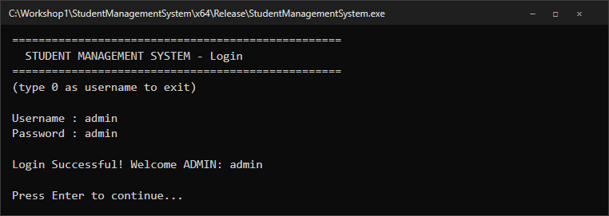
Login The password shows as * while typing.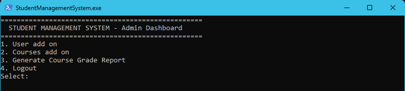
Admin Dashboard Users, courses and the course grade report.==================================================
STUDENT MANAGEMENT SYSTEM - Admin
================================================== Admin Keeps student, lecturer and course records.
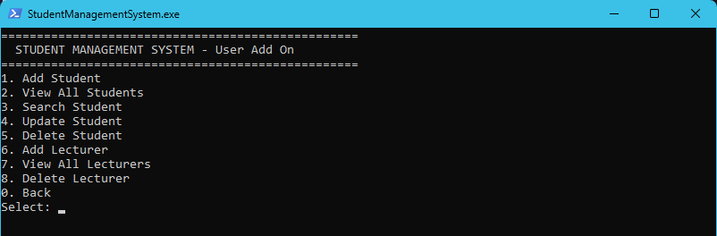
User Add On Add, view, search, update and delete people.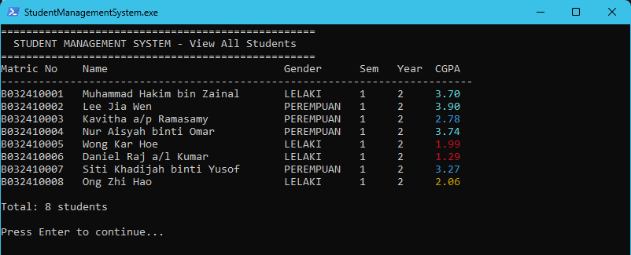
View All Students CGPA in the four grade colours.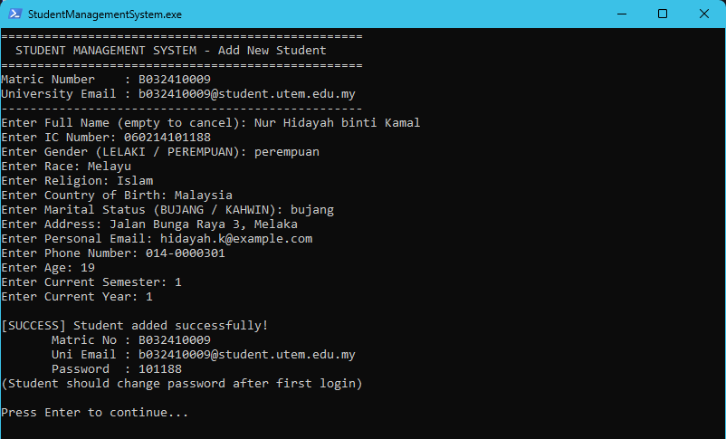
Add Student The matric number, uni email and first password are made for you.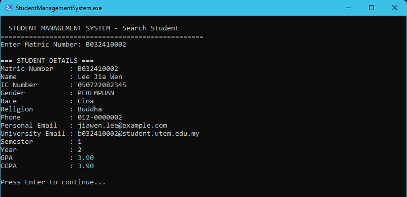
Search Student Full details for one matric number.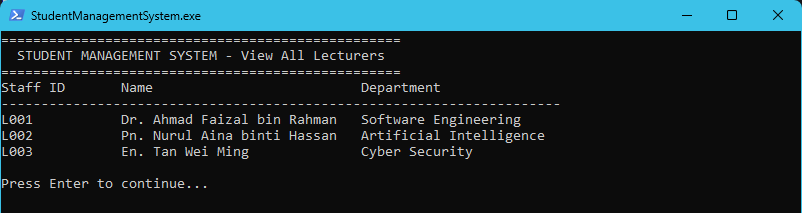
View All Lecturers Staff ID, name and department.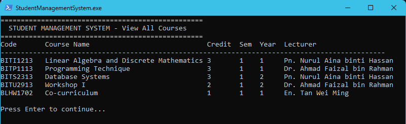
View All Courses Credit hours, semester and the lecturer in charge.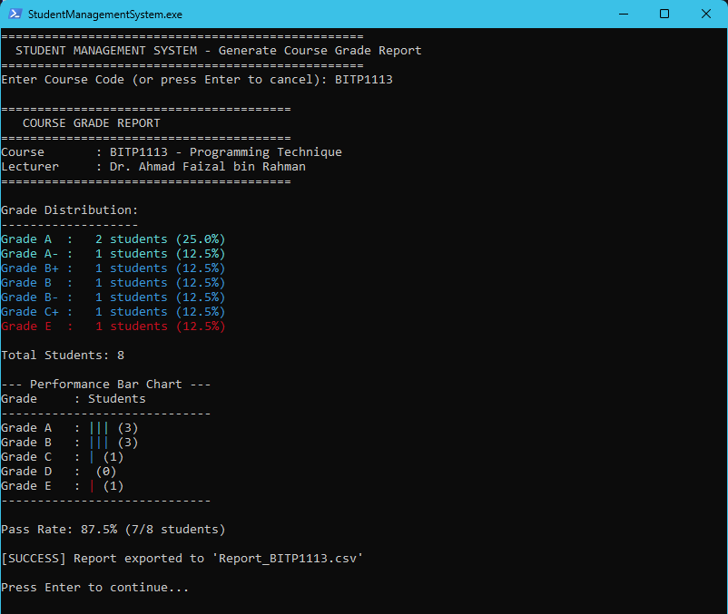
Course Grade Report Grade spread, bar chart and pass rate, saved as CSV.==================================================
STUDENT MANAGEMENT SYSTEM - Lecturer
================================================== Lecturer Marks and reports for the lecturer's own courses.
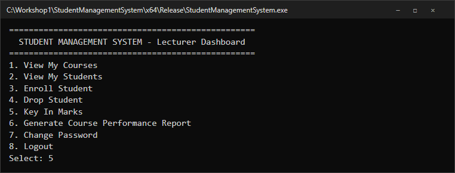
Lecturer Dashboard Courses, students, enrolment, marks and reports.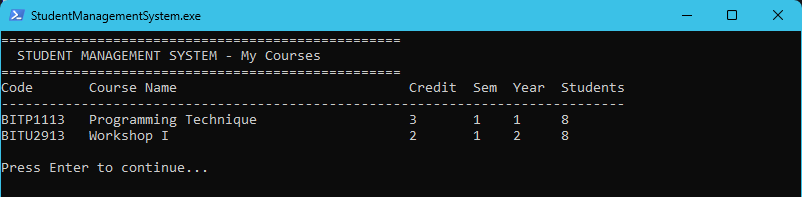
My Courses With how many students are enrolled.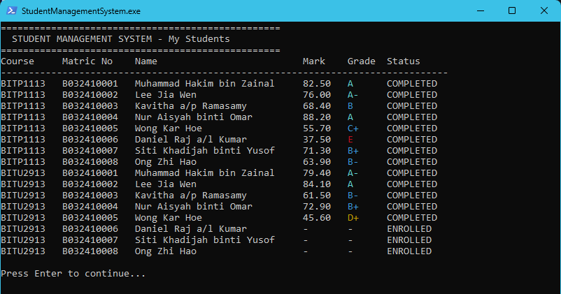
My Students Marks and grades for every course taught.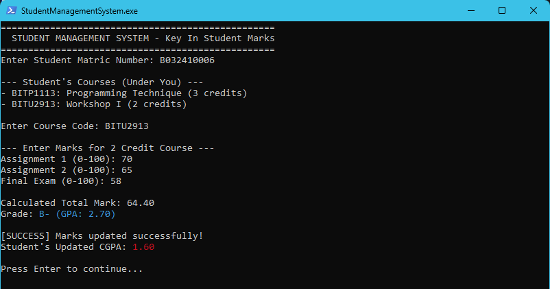
Key In Marks Weights follow the credit hours, the CGPA updates straight away.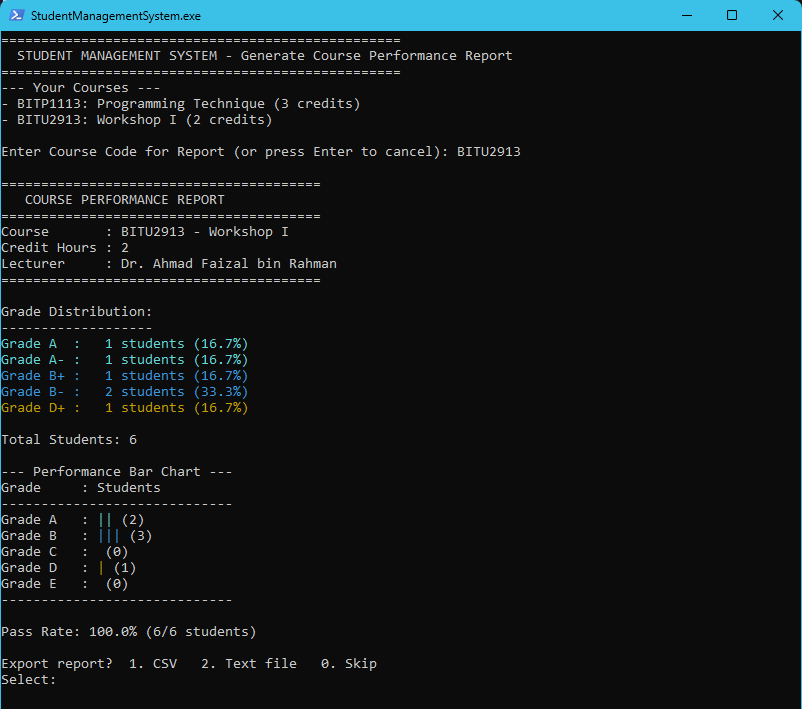
Course Performance Report Export to CSV or a text file.==================================================
STUDENT MANAGEMENT SYSTEM - Student
================================================== Student Read only access to their own records.
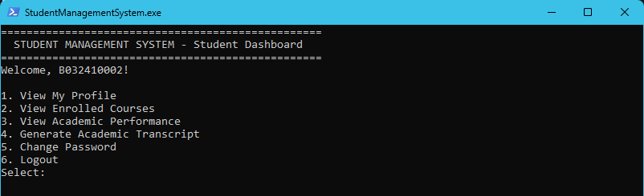
Student Dashboard Profile, courses, results, transcript and password.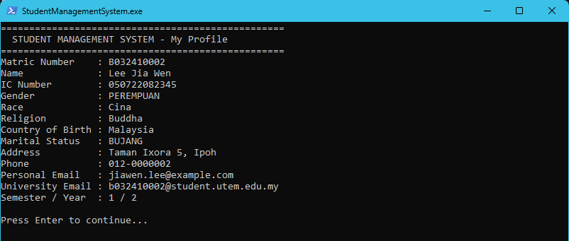
My Profile Personal and university details.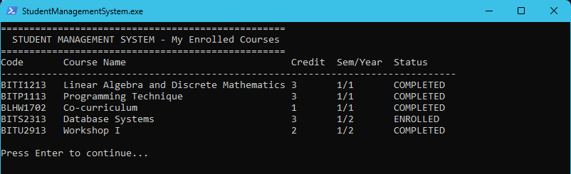
Enrolled Courses Every course with its status.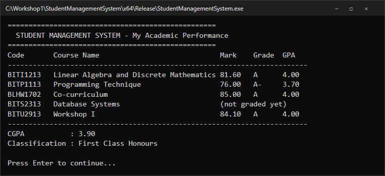
Academic Performance Marks, grades, CGPA and class of degree.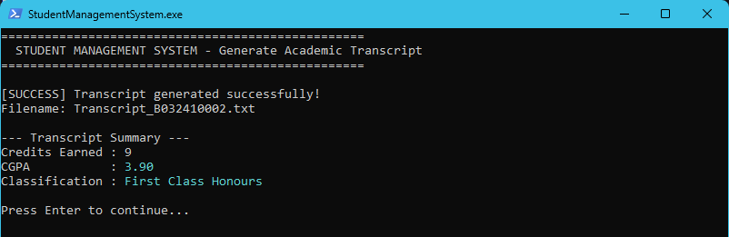
Generate Transcript Saved as a text file.
==================================================
STUDENT MANAGEMENT SYSTEM - Grading
==================================================
Grading
Weightage by credit hours
Credits Components 3 Assignment 10%, Quiz 1 5%, Quiz 2 5%, Midterm 20%, Project 20%, Lab 10%, Final 30% 2 Assignment 1 30%, Assignment 2 40%, Final 30% 1 Test 100% (co-curriculum)
Grade scale and screen colour
Mark Grade GPA 80+ A 4.00 75+ A- 3.70 70+ / 65+ / 60+ B+ / B / B- 3.30 / 3.00 / 2.70 55+ / 50+ C+ / C 2.30 / 2.00 47+ / 44+ / 40+ C- / D+ / D 1.70 / 1.30 / 1.00 below 40 E 0.00
CGPA colour
CGPA Meaning 3.50 and above Dean's List 2.50 to 3.49 Pass and upper 2.00 to 2.49 Close to failing below 2.00 Fail
CGPA = sum(GPA x credit hours) / sum(credit hours). A course is passed with 40 marks or more.